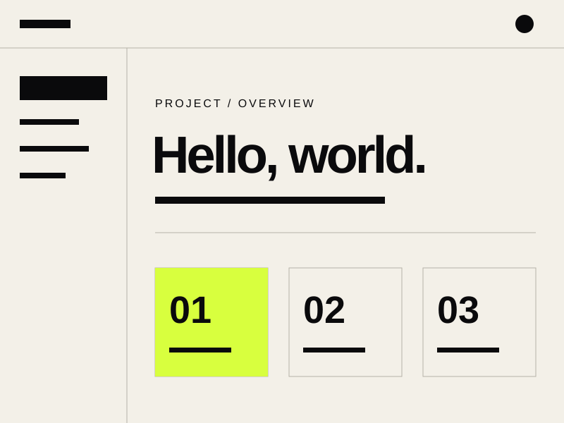

Найти и нажать
Агент читает страницу, ищет элементы и связывает клики в сценарий.
Экран → Элемент → Клик
scrolls® / Frontend & AI / 2026
Web Model Context Protocol
Веб-интерфейс
для AI-агентов
Действия сайта становятся
инструментами с понятным контрактом.
01 / Зачем это нужно
Агент читает страницу, ищет элементы и связывает клики в сценарий.
Сайт описывает действие и входные параметры. Агент вызывает нужную функцию.
02 / Модель взаимодействия
Результат возвращается агенту.
Человек и агент работают в общем интерфейсе.
03 / Два способа описать действие
Формы и поля задают инструмент: имя, описание и параметры ввода.
Поиск / Заявка / ФильтрыJavaScript регистрирует инструмент и функцию для выполнения действия.
Динамика / Состояние / Логика04 / Императивный API
Учебный пример по draft от 04.09.2026.
Старые preview используют navigator.modelContext.
if (document.modelContext) {
await document.modelContext.registerTool({
name: "greet_user",
description: "Поприветствовать по имени",
inputSchema: {
type: "object",
properties: { name: { type: "string" } },
required: ["name"]
},
execute: async ({ name }) => {
if (typeof name !== "string") {
throw new TypeError("Нужно имя");
}
return { greeting: `Привет, ${name}!` };
}
});
}05 / Декларативный API
Атрибуты называют инструмент.
Поля формы задают его параметры.
Разметка из предложения API.
Обработка запроса остаётся у приложения.
<form action="/search"
toolname="search_catalog"
tooldescription="Поиск по каталогу">
<label for="query">Что найти?</label>
<input id="query"
name="query"
type="search"
required>
<button type="submit">
Найти
</button>
</form>06 / Дизайн инструмента
Например, search_catalog:
найти товары по запросу, без покупки.
07 / Контроль выполнения
JSON Schema описывает ожидания. Валидацию выполняет приложение.
Доступ к данным и операциям контролируется в вашей бизнес-логике.
Перед важным изменением показывайте человеку действие и его параметры.
08 / Где применять
Собрать сведения о проблеме и подготовить обращение.
create_ticketНайти товар по характеристикам и выбранным фильтрам.
search_productsПодобрать рейсы по маршруту, датам и предпочтениям.
find_flights09 / Следующий шаг
WebMCP ещё развивается
Спецификация — проект Community Group, а не стандарт W3C. Сверяйте API с реализацией браузера.
scrolls® / Библиотека макетов
Aa
Десять композиций
для следующего выступления
Имя Фамилия
Команда / Событие / 2026
Макет / План выступления
От общего контекста
к конкретному действию.
Макет / Разделитель главы
02
Новая глава начинается
с нового вопроса.
Макет / Объяснение
Короткий абзац задаёт ситуацию. Читатель понимает, что уже известно и почему вопрос заслуживает внимания.
Вторая колонка развивает мысль. Здесь появляется объяснение, аргумент или следствие для аудитории.
Макет / Цитата
“Если всё выделено,
ничего не выделено.
Макет / Крупные цифры
Макет / Процесс
Следующий шаг опирается
на результат предыдущего.
Макет / Сравнение данных
Один взгляд на отличия.
Одна шкала для всех вариантов.
| Критерий | Базовый | Расширенный |
|---|---|---|
| Участники | 5 | 20 |
| Проекты | 3 | 15 |
| Хранилище | 10 ГБ | 100 ГБ |
| Поддержка | Почта | Чат + почта |
Все значения демонстрационные.
Макет / Визуал и подпись
Визуал несёт основную информацию.
Текст указывает, на что смотреть.
